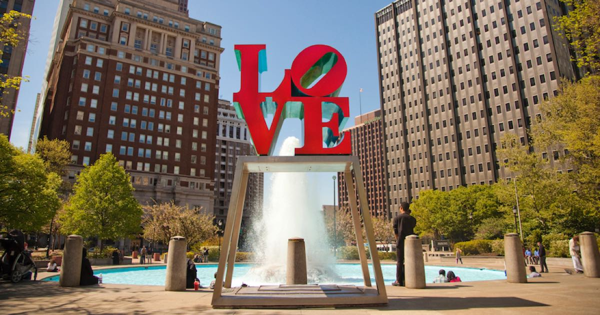
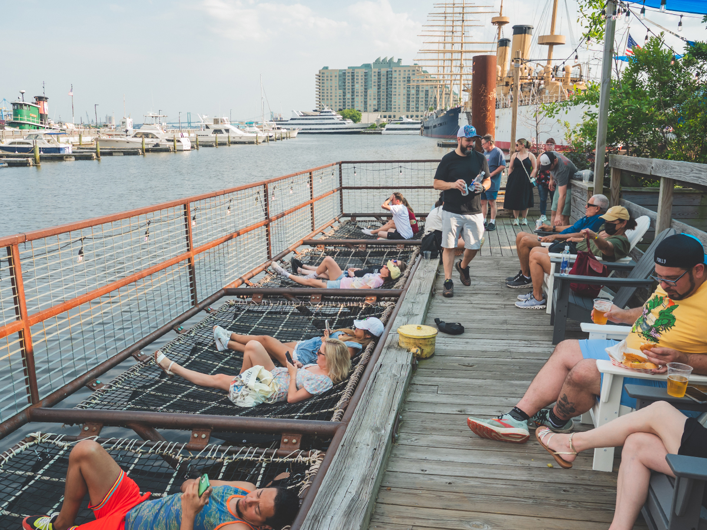

Philadelphia is home to historic landmarks, waterfront spaces, public parks, and cultural destinations that welcome visitors from around the world. This guide highlights a few accessibility features, seating areas, pathways, crowd levels, and nearby amenities to help visitors better plan their experience throughout the city.

Explore exhibits about the Liberty Bell’s history, myths, and role as an international symbol of freedom.

Public and shaded resting areas available nearby.

Mostly paved and step-free pathways.

May be busy during weekends and peak tourism seasons.

Explore Philadelphia’s iconic LOVE sculpture, fountains, green space, and open walking areas near City Hall.

Nearby parking garages and street parking available.
Mostly step-free paved pathways with open walking space.
Public seating and rest areas are available.

Explore hammocks, waterfront seating, food vendors, boardwalk pathways, and Delaware River views.
Nearby parking garages and waterfront parking available.
Open paved pathways throughout the waterfront space.
Hammocks, picnic tables, and shaded seating available.
May be busier during evenings, weekends, and summer events.

Explore the birthplace of the Declaration of Independence and the U.S. Constitution within Independence National Historical Park.
Nearby parking garages and street parking available.
Accessible first floor mostly step-free pathways nearby.
Public seating available throughout the surrounding park areas.
May be busy during weekends and peak tourism seasons.
Accessible Philly was created as part of a Drexel University Master's course project. Information on this website is based on independent research and may change over time. Visitors are encouraged to confirm accessibility details with official venues and transportation providers before traveling.
Go Birds!